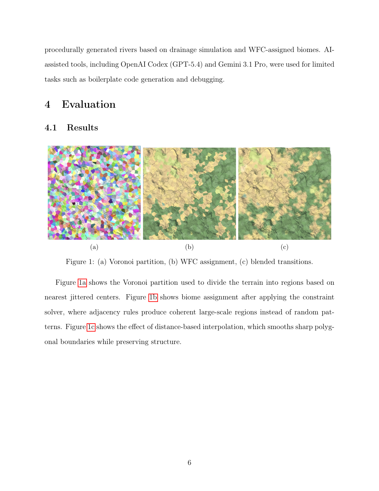
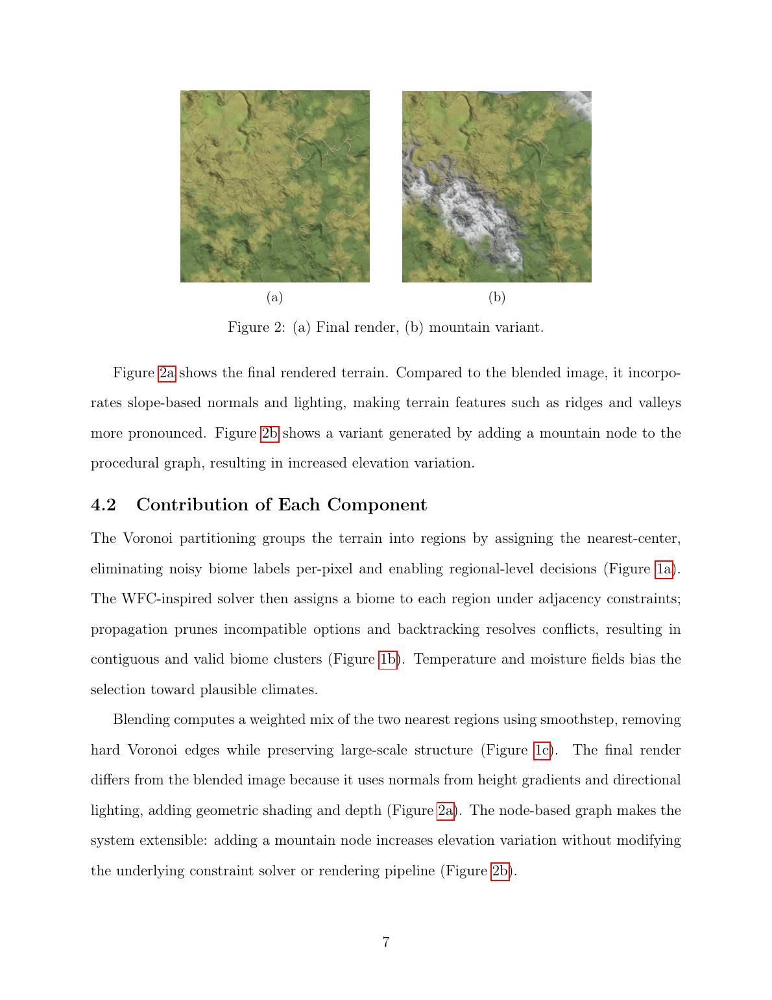

01
COMPUTER GRAPHICS · PROCEDURAL GENERATION
Constraint-Driven Procedural Terrain
A real-time C++/OpenGL procedural terrain pipeline using Voronoi-partitioned terrain and a Wave Function Collapse-inspired constraint solver to generate coherent biomes.
C++17OpenGLSDL2GLSL
- Developed a WFC-inspired constraint solver with entropy-based selection, constraint propagation, and backtracking to generate coherent biomes across Voronoi-partitioned terrain.
- Implemented Voronoi region generation and smoothstep biome interpolation within a real-time C++/OpenGL procedural terrain pipeline.

